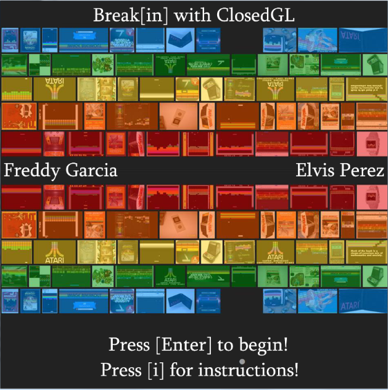

RIT iOS App Challenge 2014: Chocofling
The original submission can be found here.
Chocofling is a casual game built using the Sprite Kit framework. The goal behind Chocofling is to accrue as many points as possible by coating falling food with fondue. The fondue supply is limited; the game is over once the supply is depleted. Non-food objects will also fall, and will negatively impact the players' score if coated with fondue. In addition, powerups will also spawn, changing the dynamics of the game.
Chocofling information:
- Language : Objective-C
- Technology: Xcode
- Frameworks: AVFoundation / Sprite Kit
- Team size : 3
Gameplay video from one of the team members:
Break[in]
Break[in] is a small game built using C++ and OpenGL. Similar to the original breakout, the goal of Break[in] is to direct a ball to destroy all of the targets in a level. Sound effects, as well as different background music for every game state, was implemented in Break[in] in order to extend familiarity with various libraries.
Break[in] information:
- Language : C++
- Technology: Visual Studio 2012
- Libraries : OpenGL 3.2 / OpenAL Soft / GLFW / GLEW / GLM
- Team size : 2
Here are some of gameplay screenshots of Break[in]
